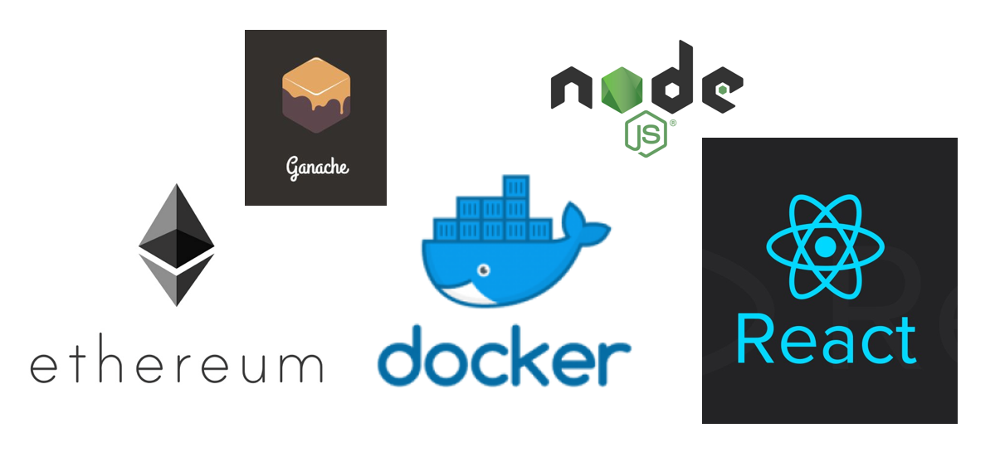
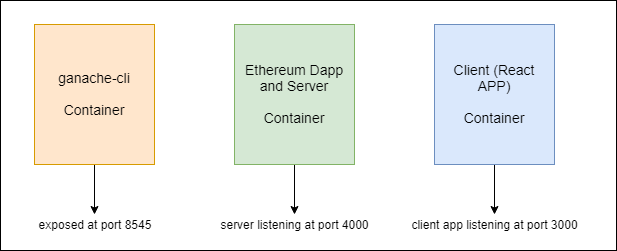
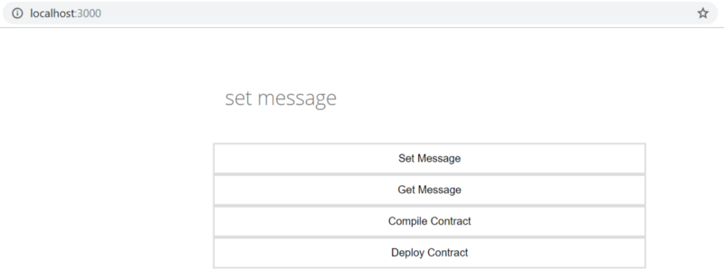
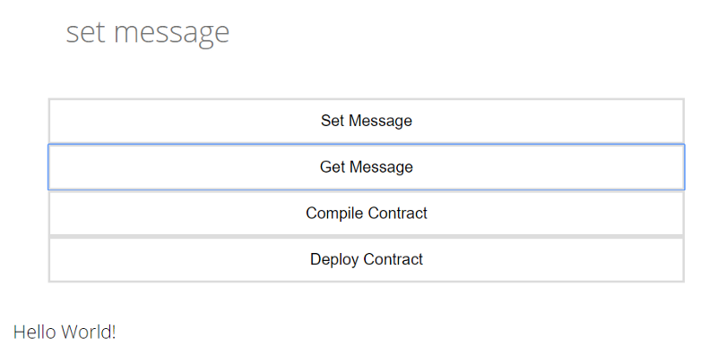
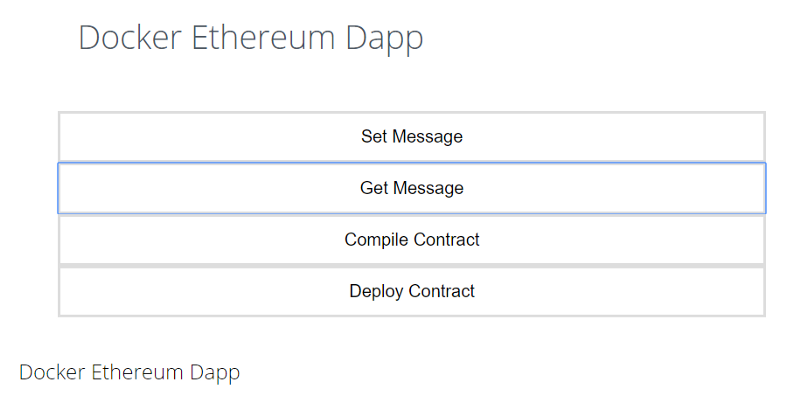

In this tutorial, we’ll create an Ethereum Dapp and will run its different components in a separate docker container.
You can clone the project using this GitHub link.
Thanks to the people who’s article and courses helped a lot:
Brandon Morelli For HTML and CSS ( Build a Weather Website )
Stephen Grider For Ethereum and Docker course on Udemy.
Before beginning lets understand what we’re going to build and how the structure of our Dapp will look like.
In the Dapp there will be three modules:
1. ganache-cli 2. Ethereum-Dapp and Server 3. Client (React App)
The above 3 modules will run in individual docker containers.

Why we’re building individual container for each service when they all can be build in one container?
Yeah, all can be build in one container and everything will be straight forward. Just for some fun, we’re using different containers.
Project Setup
Create a project folder and give it the name docker-ethereum.
Directory Structure
docker-ethereum
- client
- ethereum
- server
- .dockerignore
- docker-compose.yml
- Dockerfile
- Dockerfile.ganache
- package.json
package.json
Create a package.json and paste the below code:
We have finished installing the dependencies for the project.
To build any application our network should be ready. So, let’s first start with our ganache-cli as the network.
1. ganache-cli
It is a test network which comes with 10 accounts with 100 ethers each. It is best for development where you don’t have to wait for the transactions to mine.
Ganache is a personal blockchain for Ethereum development you can use to deploy contracts, develop your applications, and run tests.
In our application ganache-cli will run in a docker container.
Inside the project directory, create a Dockerfile.ganache .
In this Dockerfile, we’ll write all the instructions to set up and run the ganache-cli inside the container.
-
Line 2: to build this ganache-cli image, we’re taking node:alpine as a base image.
-
Line 5: we’re setting /app folder as the working directory of the image where all our instructions will run.
Line 8: we’re installing ganache-cli globally.
Line 12: we’re setting ganache-cli -h 0.0.0.0 as the default command of the image.
Ganache-cli’s default host is 127.0.0.1 but for docker instance it is 0.0.0.0
I have explained all the above instructions in detail in my last post. Please check it, if you find any difficulty here.
Our network is configured.
2. Ethereum Dapp and Server
Ethereum Dapp
Create a Ethereumfolder in the project directory.
Directory Structure
Ethereum
- build
- contracts
- Message.sol
- compile.js
- deploy.js
- logic.js
- receipt-ganache.json
- web3.js
Inside the Ethereum directory:
contracts
Create a new folder contractsand a new file Message.sol in the contracts folder and paste the below code.
We’re creating a simple message contract. There will be 3 functions in this smart contract
- constructor
- setMessage
- getMessage
In the Message smart contract when it will run for the first time, that time the constructorwill set the message as the initial message.
The setMessage function will set a new message.
The getMessage is a view function and it’ll return the value of the message variable which was set either by constructor or setMessage .
compile.js
Create a new file compile.js and paste the below code in it. This will compile the Message.solsmart contract and save the compiled contract in the build folder as Message.json .
web3.js
Create a web3.js file which will work as a bridge between the application and the ethereum network.
web3.js is a collection of libraries which allow you to interact with a local or remote Ethereum node, using an HTTP, WebSocket or IPC connection.
web3.js can be used in 2 ways,
- server-side web3js: transaction signed on the server side
- client-side web3js: transaction signed on the browser side. In this web3js invoked by third-party like Mist or Metamask. In the client-side web3js invoked in the html pages.
For this project, we’re using server-side web3js.
Copy and paste the below code to the web3.js
Take note of web3 provider
http://ganache:8545. Here, ganache is the name of the container in which ganache-cli is running.
deploy.js
Create a deploy.js file and paste the below code in it. It will take the compiled contract Message.json and deploy the contract to the network.
From the web3.js file, deploy.js import the web3 instance of ganache-cli and web3network as ganache .
logic.js
Create a new file logic.js and paste the below code in it. It consists of all the logic to interact with the deployed Message contract on the network.
There are 3 functions inside the logic.js
- getContractObject it will return the contract object/instance which was deployed on the network using
deploy.js. This object will then call the smart contract. - setMessage it requires 1 string argument and set this as a message to the
messagevariable in the smart contract. - getMessage will return the message set either by
constructororsetMessage
The ethereum module is complete.
Now, server needs to be set up which will call the ethereum module.
server
Create a server folder in the project directory.
Directory Structure
server
- routes
- contract-API.js
- smart-contract-API.js
- index.js
routes
Create a routes folder inside the server folder.
contract-API.js
Create a contract-API.js file and paste the below the code.
To compile and deploy the contract we have created APIs instead of manually compiling and deploying it on the network.
If you remember, our Message smart contract’s constructor requires an initial message. To keep it simple, by default we’re setting initial message as Hello World! . You can change it in the deploy router.
smart-contract-API.js
Create a smart-contract-API.js and paste the below code.
smart-contract-API.js routers will call setMessage and getMessage from logic.js
index.js
Create a index.js file in theserver folder and paste the below code.
This is the server for ethereum dapp.
At the top, we’re importing routes contract-API.js and smart-contract-API.js . The server is listening at the port 4000 .
The server module is complete here.
Let’s dockerize it.
Dockerfile
Create a Dockerfile in the root project directory and paste the below code.
The docker image will create according to Dockerfile.
node:alpineTo create an image we require a base image which comes with some pre-requisite software. Our server and ethereum are dependent onnodethat’s why we are usingnode:alpineas a base image.alpinein short, is the minimum required libraries to run a node application.WORKDIR /appsetting/appdirectory of base image as the working directory.- Line 8 & 9 Installing the pre-requisite software for the ethereum dapp like
pythonis required to install theweb3library. COPY ./package.json .Copypackage.jsonin/appdirectoryRUN npm installInstall the dependencies mentioned inpackage.jsonCOPY . .Copy the complete root directory and paste in the/appdirectoryCMD ["npm","start"]set the default command
If you noticed we are copying the complete root directory which includes node_modules . This will make the image large and it makes no sense as we’re installing it from the copied package.json inside the image.
To ignore the files or folders while building the docker image just like the .gitignore in docker there is .dockerignore file.
.dockerignore
Create a .dockerignore file and paste the below code.
node_modules/
client/
It will ignore the node_modules and client directory which we’ll create in the next section. If we don’t ignore the client directory then it will copy the client application too.
Now, we can move to our last module React application the client .
3. Client (React Application)
For the react application, we’re using create-react-app tool for the Dapp.
Create React App is a tool (built by developers at Facebook) that gives you a massive head start when building React apps. It saves you from time-consuming setup and configuration. — treehouse
Installing Create React App
We need to install the create-react-appglobally. Open your Terminal or console and run:
npm install -g create-react-app
From the project directory, open the terminal or console to create the react app by name client and run the below command.
create-react-app client
Directory Structure
client
- public
- favicon.ico
- index.html
- manifest.json
- src
- App.css
- App.js
- App.test.js
- index.css
- index.js
- logo.svg
- message.js
- serviceWorker.js
- .dockerignore
- Dockerfile
- package-lock.json
- package.json
- README.md
Once the client is created you will see a folder structure like above except message.js inside the src ,Dockerfile and .dockerignore.
For more information on react please follow the below links:
- https://facebook.github.io/create-react-app/docs/getting-started
- https://blog.teamtreehouse.com/getting-started-create-react-app-tool
index.html
Open index.html from the public folder and change the title to Message App . Add the below link in the <head> tag. This is the fonts which are used in the application.
<link href='https://fonts.googleapis.com/css?family=Open+Sans:300' rel='stylesheet' type='text/css'>
App.css
Open the App.css from the src folder and paste the css from this link.
message.js
Create a message.js in the src folder and paste the below code. This is the file which will work as the front-end of the application.
Note: I am not good at React so I can just give details of methods which are used in it.
A component is the building block of any react app. To create a component it requires Component module from reactthe library. The endpoint is set to http://localhost:4000 as the server is running at 4000 port.
To make any request to the server axios library is used. To learn more about it follow this link.
Open the terminal from the client directory and run the below command:
npm install axios --save
We have created a Message component by extending the Component and at the bottom exported the Message .
There are 2 states in the Message component message and output .
States are the data which defines and control the behaviour of the component. Learn more about states in this link.
The messagestate will store the message entered in the form and this state will use as an argument to send the POST request to localhost:4000/ to setMessage.
The output state will store the response from the server and display it.
Following methods are used in message.js :
onChangeset themessagestate according to the entered inputonsubmitcompilesend the request tolocalhost:4000/compileto compile the smart contractonsubmitdeploysend the request tolocalhost:4000/deployto deploy the smart contractonsubmitsetmsgsend the request tolocalhost:4000/withmessagestate as an argument to set the message to the smart contractonsubmitgetmsgsend the request tolocalhost:4000/to get the message from the smart contract
App.js
Open the App.js from src folder and paste the below code. The application’s Route set at / . On this route, it will serve the message.js component.
To create the route react-router-dom library is used.
Open the terminal from client directory and run the below command:
npm install react-router-dom --save
Dockerfile
With this Dockerfile our client module will complete.
In this Dockerfile we will write the instruction to create the image of the react application.
Create a Dockerfile in the client directory and paste the below code.
All the commands are self-explanatory. According to this Dockerfile, a docker image will build. The client (react-app) will run inside the container using this image.
The COPY command is copying the node_modules too. Create a .dockerignore .
.dockerignore
Create a .dockerignore file in the client directory and paste the below code.
node_modules/
Our client module is also finished.
Everything is set. Now, the last thing we have to do, build these docker images and run them as individual containers.
docker-compose.yml
Create a docker-compose.yml in the root project directory and paste the below code.
You might be thinking about why we even need docker-compose.yml .
It just makes the application bit smooth. How?
Compose is a tool for defining and running multi-container Docker applications.
We have created 3 Dockerfile for the 3 modules of the application. If we don’t use the docker-compose.yml then we have to separately build the 3 images and then run them separately in 3 different terminals. So, that’s a drag.
In docker-compose.yml we can define all the containers’ configuration and all can be run with a single command.
versionthe version of a docker-compose fileservicesall the containers’ definition.
There are 3 services/containers:
1. ganache
ganacheis the name of the containerbuildwhere to find the Dockerfile to build. If we don’t give the name of Dockerfile then by default it builds theDockerfile. Forganachewe have createdDockerfile.ganache. Its syntax will be a little different. Under thebuildthere iscontextit is a path ofDockerfileanddockerfilename of theDockerfile.portsA container is isolated from outside which means whatever request we will try to make from the outside of the container it will not respond. That’s why we set theportswhich maps the outside’s port to container’s port. Here we mapped port8545to8545if we make any request from outside to8545it will send the request to the container at8545.
2. dapp
dappis the name of the container.buildfind theDockerfilein current directory.portsmap the ports at4000:4000depends_onstart after theganache
3. react
reactis the name of the containerbuildfind theDockerfileinclientdirectoryportsmap the ports at3000:3000depends_onstart after thedapp
To learn more about docker-compose.yml follow this link.
So, the hard part is over. Now, the fun part let’s run the application.
Open the terminal from the root project directory and run the below command:
docker-compose up --build
It will check for docker-compose.yml file in the current directory and will run it. For the first time, it will take some time so have patience.
Once everything is running, open the browser and go to localhost:3000 you’ll see the react application running.

- Compile Contract: You’ll see the message as compiled successfully.

- Deploy contract: It will send back the address of the contract at which it is deployed.

Note: After compile or deploy command wait for a couple of seconds before running any other commands as both commands restart the server. Why?
On compile, it saves the compiled contract in build, if the server doesn’t restart then it will use the last compiled contract to deploy the contract.
On deploy, it saves the receipt in which deployed contract address is saved, if the server doesn’t restart, it will interact with the last deployed contract as the server is still using the last deployed contract’s address.
- Get Message: If you remember we set the initial message as
Hello World!

- Set Message: Set the message and it’ll return the transaction hash of the transaction. I set the message as “Docker Ethereum Dapp” and “ 0x464385a1914b0d8ffb48d660aa55d419f0afe040e0def20ff581338bbce545e2” is the transaction hash.

Check the message using “Get Message”

We successfully created the Ethereum Dapp with React and Docker.
You don’t have to build the docker-compose.yml every time. Next time you just have to run the below command to run the application.
docker-compose up
You can clone the complete project from the GitHub link.